Bestiário
13 inimigos comuns, 5 minibosses e 4 chefes. Todo inimigo comum tem uma versão Elite: dourada, com mais vida, e um dos debuffs e modificadores de elite.
Inimigos comuns
A coluna "Elite" mostra o debuff que a variante dourada daquele inimigo aplica ao te acertar, além do dano em si e de qualquer modificador de elite que ela também possa carregar. Gosma é a única exceção: o único inimigo comum sem variante Elite no jogo.
| Inimigo | Padrão | Elite aplica | |
|---|---|---|---|
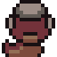 | Rastejante | Vai reto até você e não faz mais nada. Frágil, mas raramente vem sozinho. | Veneno |
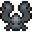 | Enxame | Nasce em bando de 3 a 5. Cada um cai com um toque, mas todos chegam juntos. | Atordoado |
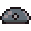 | Gosma | Arrasta-se atrás de você sem pressa. Sozinha é inofensiva; o problema é nunca vir sozinha. | sem variante Elite |
| Sentinela | Fica parada e dispara em leque. Obriga a se mexer em vez de trocar tiro parado. | Cegueira | |
| Titubeante | Avança, hesita, recua e avança de novo. Ganha terreno mesmo parecendo indeciso. | Atordoado leve | |
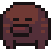 | Atirador | Atira em leque e recua quando você encosta. Não deixa a distância fechar. | Debilitar |
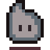 | Eco | Dispara o mesmo padrão de quem veio antes dele. Some rápido, atira devagar. | Silêncio |
| Agarrador | Pisca antes de puxar você para perto. Sair da área durante o aviso anula o golpe. | Lentidão | |
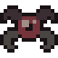 | Peste | Persegue e dispara um leque largo. Ficar parado à distância é o jeito errado. | Silêncio |
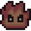 | Bruto | Lento e pesado. O golpe demora a sair, mas empurra longe e machuca mais que qualquer outro comum. | Vulnerável |
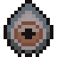 | Olho | Avança devagar e dispara uma estrela. Um raio sempre aponta o peito. | Debilitar |
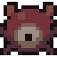 | Vidente | Atira onde você vai estar, não onde está. Desvia atravessando o tiro. | Lentidão |
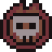 | Cavaleiro | Fecha a distância num charge avisado e dispara depois. Kitar só adianta o avanço. | Atordoado |
Minibosses ("Ecos Inacabados", no jogo)
| Miniboss | Padrão | |
|---|---|---|
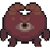 | Guarda Imóvel | Esqueceu como andar. Não esqueceu como mirar: leque no peito e anel no chão, mesmo longe. |
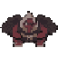 | Duelista | Estudou você antes de sacar. Circula perto, atira no caminho e avança se você tenta kitar. |
| Brasa | Leque denso e fogo no chão que fecha depois. Sai do círculo antes do aviso acabar. | |
| Tecelão | Fia a mesma linha sem parar, cada vez mais apertada. A brecha some se você para — e o tear mira quando fecha. | |
| Fragmento Voraz | Não sabe mais ser um inimigo inteiro. Quando racha, os dois pedaços correm atrás e atiram mais fundo. |
Chefes
Um entre os quatro é sorteado no início da run e se mantém o mesmo em todo loop de Ascensão seguinte, ficando mais forte a cada volta. Todos lutam em 3 fases: o comportamento muda aos 66% e aos 33% de vida, com um golpe novo entrando em cada troca. E qualquer ataque pesado — do chefe ou não — sempre avisa no chão antes de acontecer.
| Chefe | Padrão | |
|---|---|---|
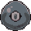 | O que aceitou | Deixou o loop terminar o que começou. Se você fica longe, avança, dispara veneno e ainda assim fecha a distância. Na metade da vida, aceita de vez e solta veneno em todas as direções — não tem lado seguro. |
| O que esqueceu | Não lembra do próprio nome, só do padrão. Anel de silêncio e leque mirado — ficar parado à distância não segura. | |
| O que resistiu | Ainda recua, mas dispara enquanto avança e pisca perto. Confunde quem encosta e alcança quem kita. | |
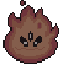 | O que tentou escapar | Ainda tenta chegar na porta. O gancho avisa; sai do cone. Se a fuga erra, ele cambaleia. |
Chefes, fase por fase
Fase 2 dispara ao cair para ≤66% de vida; Fase 3, ao cair para ≤33%. Tempos de telegraph, dano e cooldowns abaixo são os valores reais do código, na Ascensão 0 (loop 0) — todos escalam junto com os multiplicadores de dano/vida de inimigo por loop descritos acima.
O que aceitou 3900 HP · aplica Veneno
| Fase | O que muda |
|---|---|
| 1 | Três ataques em rotação: Investida (golpe em área corpo-a-corpo, telegraph 0,9s, 38 de dano, empurrão 400, deixa uma poça de veneno de raio 60 que dura 24s causando 6 de dano + veneno a cada 0,8s); Avanço (dash de embate, telegraph 0,62s, alcance de ativação 540); Escarro (cone de 3 projéteis de veneno, telegraph 0,4s, 18 de dano cada). |
| 2 | Destrava a Explosão Radial: 14 projéteis de veneno em círculo completo, cooldown de 6s. Os três ataques da fase 1 ficam com cooldown mais curto. |
| 3 | O Avanço ganha um segundo dash em sequência automático; as poças de veneno no chão crescem 60% de tamanho; a Explosão Radial sobe para 18 projéteis com cooldown de 4,5s. |
O que esqueceu 2300 HP · aplica Silêncio
| Fase | O que muda |
|---|---|
| 1 | Anel (um anel centrado nele mesmo que silencia e empurra quem estiver perto, mais uma rajada radial de 8 projéteis) e Leque (cone mirado de 5 projéteis) alternando, cooldowns de ~1,7–2,4s. |
| 2 | Invoca um Eco — um clone espectral que orbita ao redor dele e passa a disparar seu próprio Anel de forma independente. Anel principal sobe pra 10 projéteis, Leque pra 6. |
| 3 | O Eco orbita mais rápido; o Anel principal passa a disparar um segundo anel extra 0,3s depois do primeiro. Anel sobe pra 12 projéteis, Leque pra 7. |
O que resistiu 2600 HP · aplica Atordoado leve
| Fase | O que muda |
|---|---|
| 1 | Tiro mirado (cone de 3 projéteis) e Piscar (teleporte que reaparece perto de você e solta uma explosão em anel na chegada — 5 projéteis + um leque extra de 4). |
| 2 | O Piscar agora também cria um chamariz (sprite falso) perto de você pra confundir, e ele fica parado e exposto por 0,8s após aterrissar. Tiro mirado sobe pra 4 projéteis; cooldown do Piscar cai. |
| 3 | O Piscar encadeia um segundo teleporte imediato antes de ficar exposto. Tiro mirado sobe pra 5 projéteis; burst de aterrissagem sobe pra 8 projéteis + 6 no leque. |
O que tentou escapar 2800 HP · não aplica debuff
| Fase | O que muda |
|---|---|
| 1 | Três ataques fixos: Agarrão (contato, telegraph 0,55s, 16 de dano); Gancho (puxão à distância, telegraph 0,78s, alcance 400); Dash de fuga (corre até a borda oposta da sala — se errar, ele mesmo fica atordoado 1,05s, abrindo uma janela de punição). |
| 2 | Nenhum ataque novo — os três ficam com cooldown mais curto, e Gancho/Dash dão uma pressionada extra logo na transição de fase. |
| 3 | Os mesmos três ataques, ainda mais rápidos. Este chefe intensifica o padrão existente em vez de introduzir mecânica nova. |